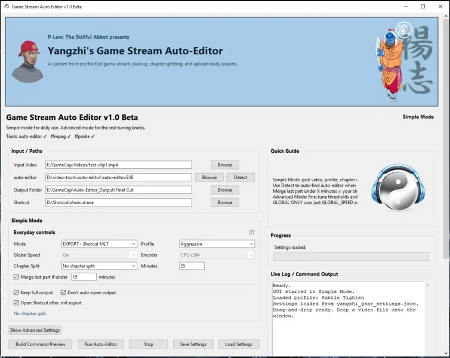
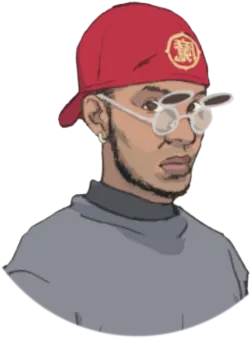
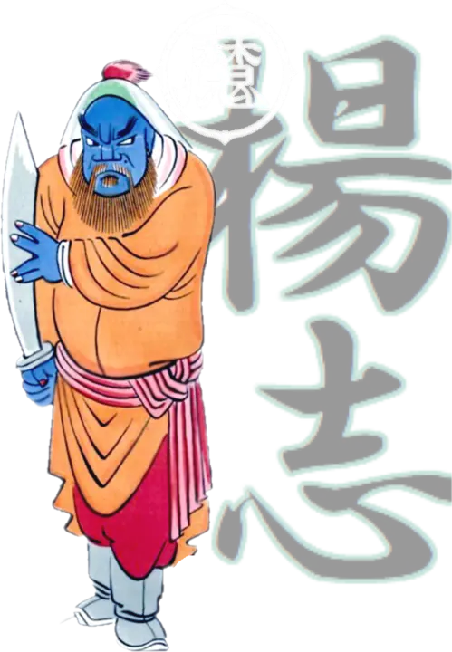
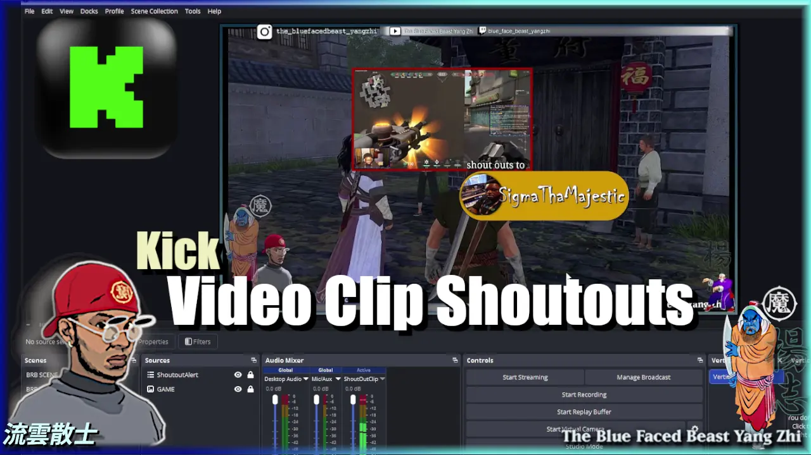
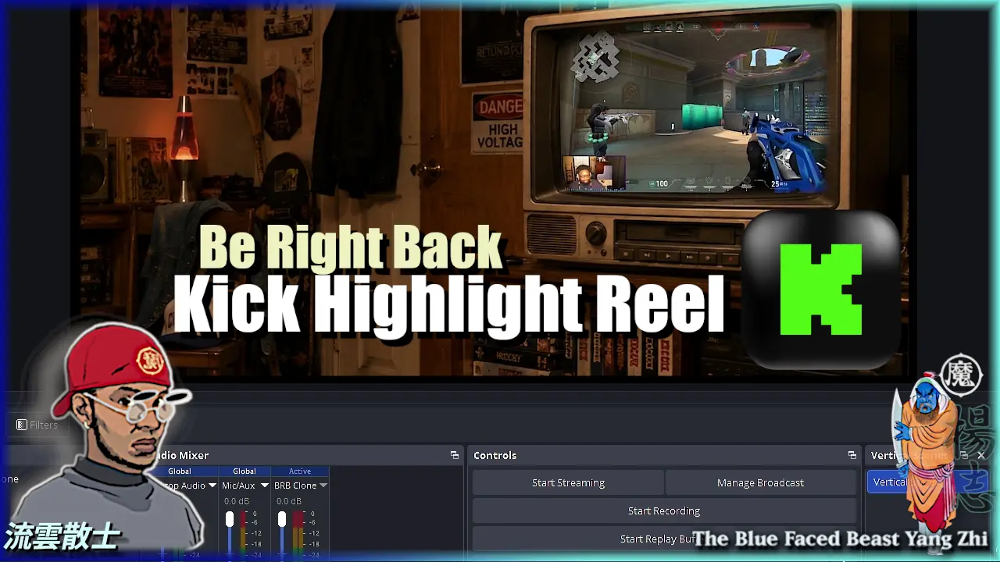
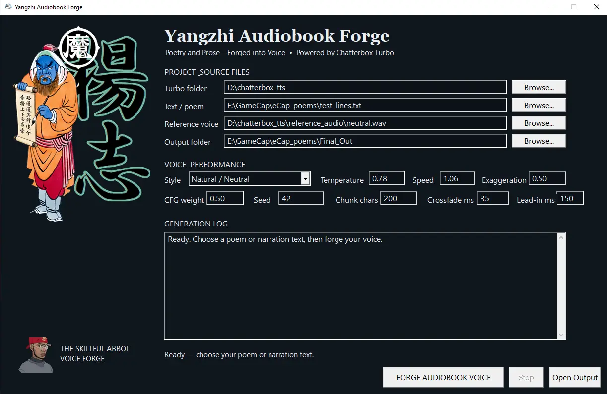

01

Desktop application · v2.0
Yangzhi Game Stream Auto-Editor
A custom Windows front end for fast game-stream cleanup, chapter splitting, speed adjustment, and upload-ready exports.

Yangzhi JianghuWorkshopTools forged beyond the ordinary path
Streaming tools, interactive overlays, and field-tested tutorials—crafted by BlueFacedBeast for creators who prefer to build their own path.

Works from the forge
Practical systems built through real streams, stubborn experimentation, and more than a little cultivation.

Desktop application · v2.0
A custom Windows front end for fast game-stream cleanup, chapter splitting, speed adjustment, and upload-ready exports.

Interactive OBS overlay
Three clips enter the arena. Chat votes 1, 2, or 3, and the winning clip expands with audio before the next round begins.

Streamer.bot toolkit
A self-contained shoutout workflow that uses saved Kick clips when available and falls back to a polished creator profile card.

BRB entertainment system
Turn downtime into a channel showcase with automatically selected Kick highlights displayed through a custom OBS browser source.

Native Windows application · v1.2
Turn poems, stories, lessons, and prose into joined voice-cloned audiobook WAVs through an existing Chatterbox Turbo installation.
Behind the workshop
BlueFacedBeast is a streamer, teacher, tinkerer, and lifelong student of the Jianghu. Every release begins as a solution to a real creative problem, then gets refined into something other creators can use.
“If the tool does not exist, enter the forge and make it.”